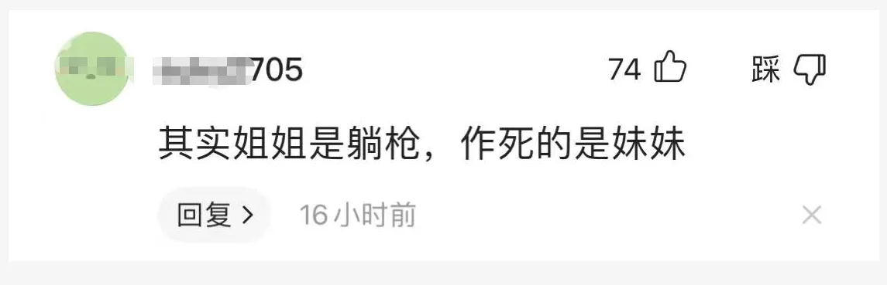

孖仔帮
公众号ID：twinsbang
关注
文|圆圈妈
网图|侵删
我不八卦，不追星，但王力宏是例外，因为圆圈爸长得很像他。
相似到什么程度呢？
一张照片放在圆圈面前，他们会不约而同地喊爸爸，那时圆圈2岁。
不过，这些都是过去式了，从他人设崩塌的那一刻开始，他不再是我的唯一。
而今天想说的重点是，这一桩离婚案件中牵涉到的女配角孙雨，是双胞胎组合BY2中的妹妹。
虽然她们07年就出道，曾红极一时，但我第一次知道这对双胞胎组合，竟然是在15年。
当时我正怀着双胎，想在网上多了解些有关双胞胎的信息，当看到她们姐妹俩的唱跳视频时，感觉蛮有才的，能歌善舞又是双胞胎特别吸睛，心想要是我们家这对将来也能这么优秀该多好啊。
现在，随着瓜越来越大，内幕越爆越多，我只觉得唏嘘不已，可惜了。
网上有很多关于这对姐妹花的评论，其中有一条留言特别一针见血。
【其实姐姐是躺枪，作死的是妹妹】
站在双胞胎的家长的角度来讲，我表示10086个赞同，这就是人人艳羡的“双胞胎有伴"所带来的负效应。
这在我们双胞胎育儿界已经是见怪不怪了。
双胞胎有伴儿一起玩，固然让父母轻松不少，但物极必反，它所带来的负面影响，也是不可低估的。
在娱乐圈，像BY2组合这样，【据说】妹妹曾经背着公司偷偷去整容了，为了保持双胞胎的相似度，姐姐迫于无奈也得整成和妹妹一样。
这种妹妹实力坑姐姐，拖姐姐后腿的，只是一个小小的例子，若深趴她们的过往史，看点和槽点可能会更多。
然而，在我们普通百姓家的双胞胎，那些负效应，也是信手拈来，比比皆是，有痛点和泪点，还很接地气。
我在这里说3个例子，都是亲身经历，如有补充，欢迎下方留言。
1，双胞胎同时生病
这是逃不开的魔咒。
通常是一个先生病，然后传染给另一个；一个刚退烧，另一个则开始发高烧；有时候是同时生病，也不知道是谁传染给谁，总之就是交叉感染。
圆圈两兄弟1岁前经常生病，几乎每个月都往医院跑，我隔三差五就得带着不一样的宝宝去复诊，连医生都无奈的问：“你这次带的娃是哥还是弟啊？”
我最害怕的就是他们咳嗽，真是怕什么来什么，每次只要上医院查血就说是上呼吸道感染，气管炎或者肺炎，经常是一个在咳嗽，十天半个月了也没见好，另一个不知何时也开始频繁咳嗽，症状一样样。
于是，两人的咳嗽声夹着哭闹声此起彼伏，仿佛一段杂乱无章的二重奏，让人听了浑身都炸毛。
每次双胞胎生病，我就仿佛脱了十层皮，唯一觉得安慰的是，我又瘦了。
2，双胞胎一起睡觉
多少个日日夜夜啊，一个娃哭了，把正在熟睡的另一个吵醒了；一个娃拉便便了，把另外一个娃给熏醒了，于是全家都被这一坨屎炸醒。
我统计下，有多少双胞胎父母对这个画面，充满了熟悉感和无奈感，请直接拉到文末点赞。
想当年，我也是听信了睡眠训练专家的建议，把圆圈哥俩放在一起睡，据说是一种免疫疗法，越是相互干扰，越要从小锻炼。
我想说，结局真的如专家所言，很完美。
他们俩从刚开始的相互影响，被彼此的哭声干扰，吵醒，不能顺利接觉，渐渐地...对彼此的哭声毫无反应，慢慢地...习惯彼此的存在，熟悉对方的气息，到最后...互不影响，雷打不动...
但过程却是相当痛苦的，受罪的是两孩子，大人也被折磨得心力交瘁（此处省略10万字....）
有很多父母会熬不住，觉得太残忍了，狠不下心，就中途放弃了，转向各种法子，去切断这种干扰，分床分房甚至分开，不在一个屋檐下长大；有的会坚持到最后，迎来柳暗花明。
温馨提示：双胞胎要不要放在一起睡，没有【要】还是【不要】，只有【合不合适】，你和其他家庭成员觉得合适就行，这是没有标准答案的。
3，双胞胎互相争抢
一个健健康康的宝宝会被另一个宝宝迅速传染疾病，但随着年龄增长，体质增强，这种影响会逐渐减弱。
一个宝宝正在熟睡却要被另一个宝宝吵醒，但若习惯在一起睡后，彼此间的影响会慢慢淡化。
然而，双胞胎的互相争抢，很有可能却是一辈子的事情。
从娘肚子开始就互相抢食营养，抢地盘；奶水不够了，要比谁哭得大声才能多喝点；玩具玩的好好的，却要被另一个宝宝抢走...
有时候，真羡慕其他有年龄差的兄弟姐妹，跟老大好好谈谈，还能让一让弟弟妹妹，但双胞胎就不是，思想成熟度和心智都一样，不懂得等待，分享。
虽然我极力做到圆圈的所有物品都一式两份，但即便是一模一样的东西，在对方的眼里，拿的角度不一样，玩的时间不一样，也会被他们认为对方的玩具才是最好玩，最香的。
我曾经非常介意双胞胎之间的互相干扰，对双胞胎有伴儿带来的负面效应深恶痛绝，因为我只想要享受俩宝在怀，左拥右抱的快乐，不想承受两个孩子互相影响的麻烦。
明明是乖乖听话的一个娃，非要被另外一个作妖的娃带歪带偏。
睡觉睡得好好的被吵醒，
吃饭吃得美美的被撩玩,
书读得蛮认真的被打断,
积木快要搭好了被推倒,
作业写得棒棒的被干扰，
总之，捣蛋一起上，闯祸一起来，就是不能单干。
但随着陪伴孩子们的时间越来越长，我明白了，天底下哪有那么多两全其美，大都是权衡利弊。
双胞胎间相互影响是必须要面对的，享受有伴儿一起玩的好处，也要接受负面效应带来的一系列不便。
所以，不如换了个角度来安慰下自己吧，应该感谢这些负效应。
在孩子们的成长过程中，从小就遭遇这些与众不同的挫折：睡不好，老被吵醒；总是生病，老被传染；玩得不爽，玩具老被抢走，在这样的环境中锻炼成长，他们会比同龄人少了几分孤单，多了些竞争意识，更早地体会到分享的快乐。
成长的路上还有更多的风雨，孩子们以后也会面临着更多挑战。届时，打扰他们睡眠，害他们生病，抢他们东西的就不是彼此那位兄弟姐妹了，而是陌生人，竞争对手，而这些人可比手足无情，甚至残忍多了….
比如这一对双胞胎组合BY2，两姐妹平时互掐互撕互损，终究还是手足，有困难还是一起扛，不离不弃，然而摊上了王这么个渣男，可能就是万劫不复的深渊。
当然，你也许一时半会儿还不能做到这么佛的心态，只想着如何把双胞胎有伴的负面效应降到最低。
办法是有的。
我们下回再撩！
今日互动话题
#盘点双胞胎有伴的那些负效应#
评论区聊一聊呗！
微信公众号：孖仔帮
ID : twinsbang
专注双胞胎孕育，养育，教育经验分享
扫码关注我们
点一下你会更好看耶

